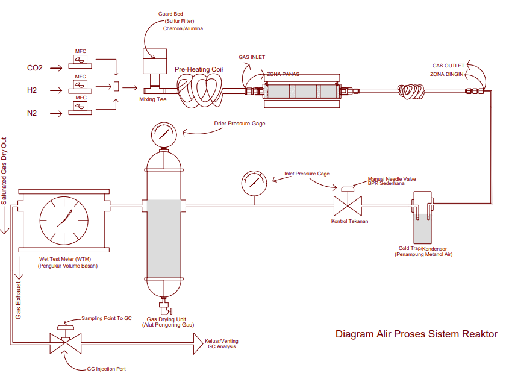
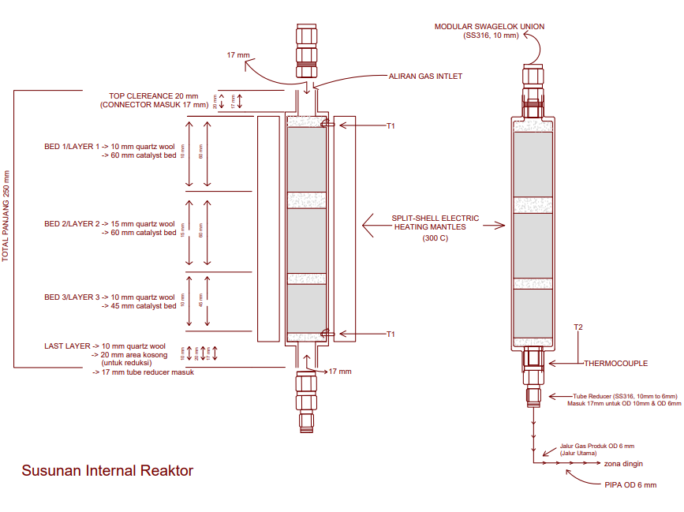
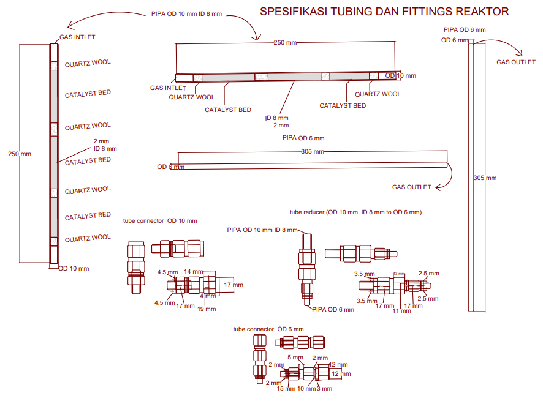
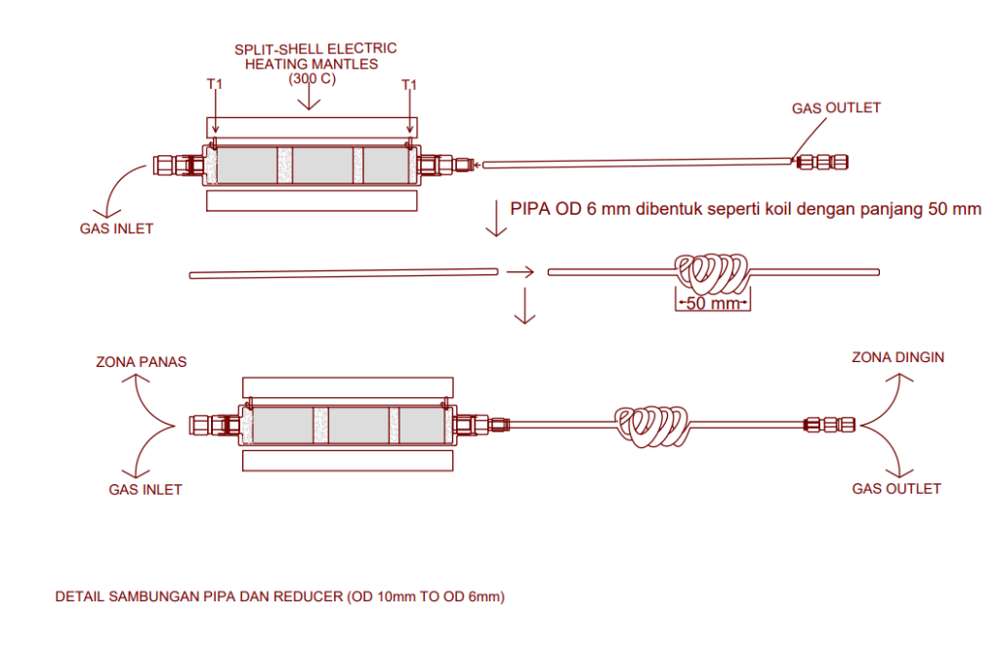
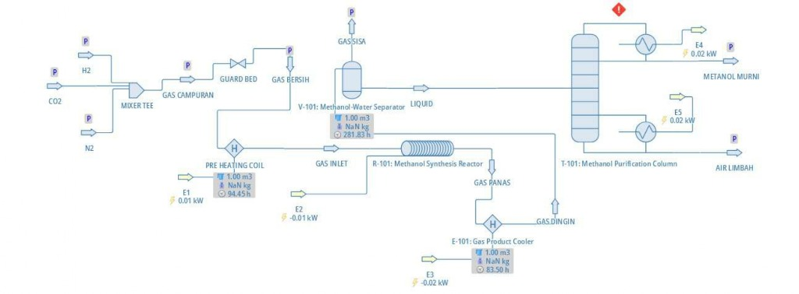

Press ESC or click anywhere to close
BRIN Research • C-Refinery Group
Designed · Analyzed · Evaluated
Spearheading an end-to-end Carbon Capture and Utilization (CCU) research initiative under the supervision of Dr. Ir. Herman Hidayat, M.Si. Developing a continuous Dual-Bed reactor system utilizing alkali metal carbonate-based adsorbents and Cu/ZnO/Al2O3 catalysts to efficiently capture CO2 and convert it into methanol.

Fig. 1 — Diagram Alir Proses Sistem Reaktor (AutoCAD PFD Drawing)
| CO₂ Feed | 44.01 g/hr |
| H₂ Feed | 6.05 g/hr |
| N₂ Carrier | 2.80 g/hr |
| MeOH Product | 22.14 g/hr |
| Water Product | 12.96 g/hr |
| Off-Gas (Gas Sisa) | 17.75 g/hr |
| Carbon Conv. | 72.39% |
| Q (Reactor Inlet) | 18.80 L/hr |
| Q (Reactor Outlet) | 11.98 L/hr |
| Residence Time | 1.59 s |
| Total Mass Flow | 52.86 g/hr |
| Density (Inlet) | 2.812 kg/m³ |
| Molecular Weight | 12.89 kg/kmol |
| Inlet Temperature | 250.0 °C |
| Operating P | 9.5 bar |
| Operating T | 250.0 °C |
| Pre-heating Duty | 8.35 W |
| Reactor Heat Load | −11.94 W |
| Product Cooler Duty | 21.62 W |
| ΔHrxn | −49.5 kJ/mol |
| Column Type | Shortcut |
| Reflux Ratio | 1.50 (Min: 0.58) |
| Actual Stages | 9.81 (~10) |
| Optimal Feed Stage | 4.86 (~5) |
| Reboiler Duty | 20.22 W |
| Condenser Duty | 18.04 W |
| Est. Diameter | 2.02 mm |
| Est. Height | 5.91 m |

Fig. 2 — Susunan Internal Reaktor (Reactor Internal Layout Drawing)
| Reactor Type | Tubular fixed-bed microreactor (continuous dual/triple-bed) |
|---|---|
| Operating T | Room temperature to 300 °C (heated via split-shell mantles) |
| Operating P | 9.5 bar (operating) • design pressure rating 75 bar |
| Catalyst Specs | Cu/ZnO/Al₂O₃ • separated by Quartz Wool layers |
| Sizing Specs | Total Length: 250 mm | Outer Diameter: 10 mm | Inner Diameter: 8 mm |
| Internal Layout | Bed 1 (60 mm catalyst) | Bed 2 (60 mm catalyst) | Bed 3 (45 mm catalyst) |
| Cooling System | 50 mm pipe cooling coil (outlet connection to OD 6 mm) |
| Vessel Material | SS316 Stainless Steel (Swagelok compression unions) |
Kinetics Modeling: Analyzed the leaching kinetics of 11 essential metal ions from oil palm Empty Fruit Bunch (EFB) ash, which serves as a bio-derived alkali catalyst source. Modeled experimental concentration profiles over time against first-order (Lagergren) and pseudo-second-order (Ho & McKay) rate equations to calculate saturation capacity (Csat) and rate coefficients (k1, k2).
| First-Order Rate (k1) | - |
| First-Order R2 | - |
| Second-Order Rate (k2) | - |
| Second-Order R2 | - |
| Time (min) | Exp (Ct) | Orde 1 | Orde 2 |
|---|
The leaching behavior shows that smaller particles (0.85 mm) yield significantly higher saturation concentrations (Csat) and rate constants due to their elevated specific surface area.
| Metal | Csat (mg/L) | k1 (1/min) | k2 (L/mg-min) | R2 Orde 1 | R2 Orde 2 | Best Model |
|---|



| # | Component | Material | Qty | Specification | Function |
|---|---|---|---|---|---|
| 1 | Reactor Tube | SS316L | 1 | OD 10 mm · ID 8 mm · L 250 mm | Reaction chamber containing catalyst beds |
| 2 | Catalyst Charge | Cu/ZnO/Al₂O₃ | 12.5 g | Pellets crushed to ~1 mm size | CO₂ hydrogenation reaction site |
| 3 | Bed Separators | Quartz Wool | 4 | High-purity fibrous silica | Catalyst bed retention & zone isolation |
| 4 | Heating Mantle | Split-shell ceramic | 1 | 220V · Max 300 °C · L 200 mm | Hot zone temperature control |
| 5 | Cooling Coil | Copper / SS316 | 1 | OD 6 mm tubing · L 50 mm coil | Cold zone product condensation |
| 6 | Separation Trap | SS316 | 1 | Vol 150 mL · Rating 10 bar | High-pressure gas-liquid separation |
| 7 | Mass Flow Controllers | Thermal MFC | 3 | Calibrated for H₂, CO₂, N₂ | Feed gas mixing & ratio control |
Gained comprehensive experience designing an industrial-scale reactor system end-to-end. I learned how to translate theoretical reaction kinetics and mass balances into mechanical AutoCAD equipment designs, developing a deep understanding of thermal management limitations in highly exothermic catalytic operations.
The project's design and operating parameters are strictly modeled under ideal, steady-state simulations using literature kinetic rate constants. Real-world catalyst decay, localized hot-spots, and flow distribution abnormalities inside the tubes can only be verified with physical laboratory scale validation.
My next step is to further study and simulate the transient process flows in DWSIM to analyze startup behavior and feed variations. Furthermore, I aim to conduct experimental validation using micro-reactor tests once laboratory-scale testing begins.